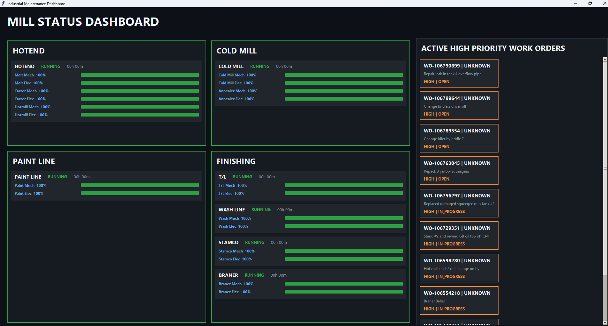

professional-experience / reliability-engineer
Reliability Engineer — Golden Aluminum
Reliability engineering work focused on downtime reduction, preventative maintenance, troubleshooting, and practical improvements to manufacturing equipment and maintenance systems.
Lean Six Sigma Green Belt Project
My Green Belt project focused on improving preventative maintenance completion. As part of the project, I developed a mill status display to make equipment condition and high-priority maintenance work easier to see in one place.

CAD and Production Support
I also designed parts and fixtures to support maintenance, measurement, and production needs. Selected drawings are included on the CAD / Design Projects page.